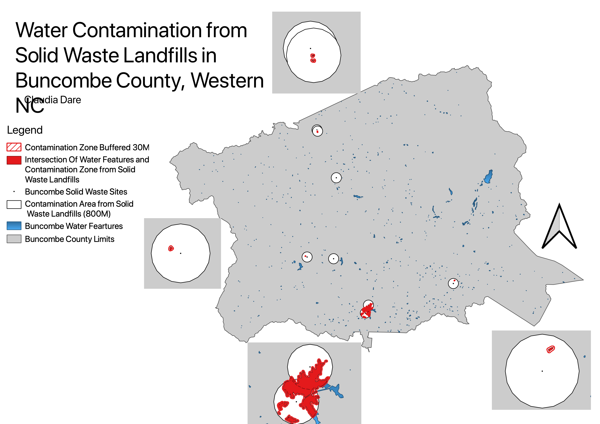

Homework 8: Geoproccessing Analysis
Claudia Dare
Are Buncombe County's solid waste landfills contaminating local bodies of water?

This map answers the research question stated above. Solid waste facilities should be 500-800 Meters away from water features in order to avoid contaminating them. In this map I used a dataset of Solid Waste landfills and a dataset of water Features. I changed the attribute data to just cover Buncombe County. From there the first geoprossessing tool I used was Buffer. I buffered the landfills 800 meters to show the whole area that should be free from bodies of water. After that I applied intersection to take the overlap between the buffer I had created and the water features layer. I highlighted in red the areas of overlap. I also buffered the intersection 30 meters and created inset maps for the areas of intersection to try to make them more visible. From the map it is clear to see that Buncombe County did not do a good job of placing their solid waste landfills to avoid contamination. Of the 8 landfills in the county 6 of them are within a 800 M distance from a body of water.
Both of my data sets are from NC One Map and linked below.
Data used for this project
Water Features Data
Water Features Data for Buncombe
Waste Landfills Data
Waste Data for Buncombe
Intersection of Water Features and Contamination Zone
Buffer around Solid Waste Sites
Buffer Around Intersection of Water Features and Contamination Zone